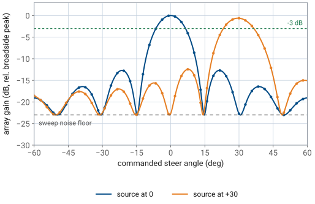
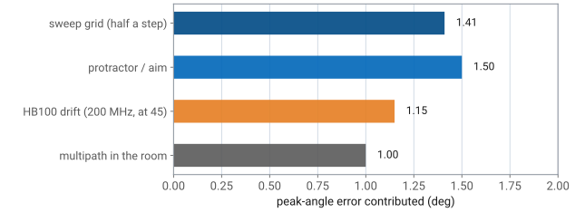

L19 - Beam Steering Lab#
Beam Steering Lab
Today that table meets the hardware.
Lesson 19 · Antennas, Phased Arrays, and Radar Systems · Dr. Neil Rogers
Learning Objectives
- I can configure the PHASER for a beam sweep and produce the gain-versus-steering-angle trace.
- I can measure the steered beam's peak angle and compare it with the commanded angle.
- I can verify the commanded element phase progression against theory.
- I can identify and bound the main error sources between predicted and measured steered patterns.
Where we were
In Lesson 18 you derived the steering law \(\Delta\phi = kd\sin\theta_0\) and used it to fill in a table of element phases for the PHASER’s eight-element array. Today that table meets the hardware. You will load those phases through the GUI, move a real source to a real angle on a protractor arc, and find out how closely the beam goes where you told it to go. The measurement produces three numbers you can defend: the angle at which the trace peaks, the eight phases the beamformer applied, and the beamwidth at boresight and at \(30^\circ\).
Part 1: What you predicted, and what the sweep plot is
The array is fixed: \(N = 8\) elements on a \(d = 14\ \text{mm}\) pitch. The source is an HB100 Doppler module at a nominal \(10.525\ \text{GHz}\), so \(\lambda = 28.5\ \text{mm}\) and \(d/\lambda = 0.491\). Steering to \(\theta_0\) takes a progressive phase of
That is the whole prediction, and it is the table you bring to the bench.
The prediction you bring
Commanded \(\theta_0\) |
\(\sin\theta_0\) |
\(\Delta\phi\) |
|---|---|---|
\(0^\circ\) |
0.000 |
\(0.0^\circ\) |
\(15^\circ\) |
0.259 |
\(45.8^\circ\) |
\(30^\circ\) |
0.500 |
\(88.4^\circ\) |
\(45^\circ\) |
0.707 |
\(125.0^\circ\) |
Element phases wrap
The phase shifters can only produce a value between \(0^\circ\) and \(360^\circ\), so element \(n\) gets \(n\Delta\phi\) wrapped modulo \(360^\circ\). Wrapping changes nothing physically, because a phase shift of \(360^\circ\) is no phase shift at all. For \(\theta_0 = 30^\circ\) the eight values are these, and elements 6 through 8 are the ones that have wrapped:
Element |
1 |
2 |
3 |
4 |
5 |
6 |
7 |
8 |
|---|---|---|---|---|---|---|---|---|
Unwrapped ramp |
\(0.0^\circ\) |
\(88.4^\circ\) |
\(176.8^\circ\) |
\(265.2^\circ\) |
\(353.6^\circ\) |
\(442.0^\circ\) |
\(530.5^\circ\) |
\(618.9^\circ\) |
Applied phase |
\(0.0^\circ\) |
\(88.4^\circ\) |
\(176.8^\circ\) |
\(265.2^\circ\) |
\(353.6^\circ\) |
\(82.0^\circ\) |
\(170.5^\circ\) |
\(258.9^\circ\) |
What the sweep plot is
The x-axis of the PHASER’s sweep plot is the commanded steer angle, not a measured arrival angle. The instrument steps the commanded angle across its range with the source held still, records the received power at each step, and plots power against command. By reciprocity — the array’s receive pattern equals its transmit pattern — the resulting trace has the shape of the array pattern, with its peak sitting at the angle where the source is. Read the trace as a pattern, but remember that every point on it was produced by a different set of element phases, not by a different direction of arrival.
Two ways to measure a pattern
That distinction matters when you reconcile numbers later. A pattern measured by rotating an antenna in front of a fixed source and a pattern traced by sweeping a commanded angle past a fixed source contain the same information, but the second one carries the beamformer’s own errors — phase quantization, gain imbalance, frequency assumption — into the shape of the trace.
Predicted sweep and wrapped phases
The widget below is the prediction tool for today’s lab. Set the frequency to the value the GUI reports for your HB100 and the steer angle to the angle you plan to command, then read \(\Delta\phi\), the eight applied phases, and the predicted half-power beamwidth. Notice two behaviors before you go to the bench: the dots mark the \(2.8125^\circ\) sample grid the sweep visits, so a narrow beam is described by only a handful of samples, and the beam widens as you steer away from broadside while the sidelobe structure stretches with it.
Part 2: Equipment and setup
You need the ADALM-PHASER kit on its stand, the HB100 source on a tripod at approximately \(1\ \text{m}\) from the array face and at the same height as the element row, a protractor arc or a printed angle scale centered under the array, and a laptop on the same network as the board.
Bring up the GUI
Bring the GUI up the way you did in Lesson 17: power the board, wait for the
Raspberry Pi to boot, and open http://phaser.local:8080 in a browser. If the
Configuration panel shows live values for Signal Freq and Rx Gain, the backend is
talking to the hardware. Run Calibrate once at the start of the period so the
per-element gain and phase offsets are current.
Then click Lab Presets → 1 Steering Angle. The preset sets the signal frequency near the HB100’s tone, a uniform taper across Rx1–Rx8, a \(0^\circ\) steer angle, and the default \(2.8125^\circ\) steer resolution. From here the procedure names only the controls you change.
The HB100 drifts
Note
The HB100 is a free-running dielectric-resonator oscillator, so its output can sit anywhere in \(10.1\)–\(10.7\ \text{GHz}\) and drifts as the module warms up. The GUI searches for the tone and reports the frequency it locked to. Record that number. Every phase in your prediction table depends on it.
Part 3: Procedure
Work through the steps in order. Each one names the control you touch and the observation you should get before moving on.
1. Confirm the source on the FFT tab
Place the HB100 at boresight (\(0^\circ\) on the arc), aimed at the center of the array. Open the FFT tab. You should see one narrow tone standing \(20\ \text{dB}\) or more above the noise, near the \(1\ \text{MHz}\) offset in the baseband spectrum. If the tone is buried, raise Rx Gain or re-aim the module before continuing. Record the frequency the GUI reports.
2. Move the source to the test angle
Slide the tripod along the arc to \(+30^\circ\), keeping the range near \(1\ \text{m}\) and the module pointed back at the array. On the FFT tab the tone drops by roughly \(10\) to \(13\ \text{dB}\), because the array is still steered to boresight and \(30^\circ\) is out past the first null of the boresight beam.
3. Hunt for the peak
In Beam Steering, enter a Steer Angle and press Apply, then read the tone amplitude on the FFT tab. Work in \(5^\circ\) steps from \(15^\circ\) to \(45^\circ\), then in \(2^\circ\) steps around the best value. Record the commanded angle that maximizes the amplitude. It should land within one grid step, \(2.8125^\circ\), of the physical angle you set on the arc.
4. Read back the phases
With the peak command still applied, open the Phase Control section and read the eight per-element phase values. Compare them with the \(\theta_0 = 30^\circ\) row of your prediction table. They agree after wrapping, and each one sits on the nearest multiple of \(2.8125^\circ\), so individual elements differ from the prediction by up to \(1.4^\circ\). Element 6 is the clearest check: the theory value \(442.0^\circ\) has to appear as \(82.0^\circ\).
5. Sweep and compare
Switch to the Rectangular tab and press Start. The instrument sweeps the commanded angle and draws the full trace, with Peak Array Gain and Est. Angle shown as readouts. Press Freeze to hold this trace. Now move the HB100 back to boresight and press Start again. The two traces have the same shape, shifted: the frozen trace peaks near \(30^\circ\) and is the wider of the two, the new one peaks near \(0^\circ\). Measure the half-power width of each by reading the angles where the trace crosses \(3\ \text{dB}\) below its own peak.
Two beam-sweep traces, source at boresight and at plus 30 degrees

6. Record against the expected numbers
The table below is what the trace should give you. The calculated column comes from the array factor for \(N = 8\) at \(d/\lambda = 0.491\); the measured column is what the sweep reads once the grid, the noise floor, and the room are in the loop.
Quantity |
Calculated |
Expect to measure |
|---|---|---|
Peak of the trace |
at the physical source angle |
within one \(2.8125^\circ\) step |
HPBW at \(\theta_0 = 0^\circ\) |
\(13.0^\circ\) |
\(13.1^\circ\), \(\pm\) one grid step |
HPBW at \(\theta_0 = 30^\circ\) |
\(15.1^\circ\) |
\(\approx 15^\circ\), \(\pm\) one grid step |
6. Record against the expected numbers, continued
Quantity |
Calculated |
Expect to measure |
|---|---|---|
Peak level, \(30^\circ\) vs \(0^\circ\) |
\(-0.6\ \text{dB}\) |
\(-0.5\) to \(-1.5\ \text{dB}\) |
First sidelobes |
\(-12.8\ \text{dB}\) |
\(-11\) to \(-13\) dBc |
Sweep noise floor |
— |
\(\approx 23\ \text{dB}\) below the peak |
Where the scan-loss number comes from
The beamwidth entry is the \(1/\cos\theta_0\) broadening from Lesson 18: \(13.0^\circ / \cos 30^\circ = 15.0^\circ\), and the exact array factor gives \(15.1^\circ\). The peak level drops because steering tilts the beam off the aperture’s face, and the array presents a projected aperture of \(Nd\cos\theta_0\) instead of \(Nd\). That is \(10\log_{10}(\cos 30^\circ) = -0.6\ \text{dB}\) for an ideal element. Real patch elements have their own roll-off and usually cost a few tenths of a dB more, which Lesson 22 takes up.
No hardware?
No hardware?
Run python phaser_headless.py --sim and open the same UI. The simulator places
its target at boresight and cannot be moved, so steps 2, 3, and 5’s second half
have no simulated equivalent — skip the protractor entirely. Instead, command a
steer angle and watch the FFT tone: the peak stays at the source’s \(0^\circ\) while
the swept trace’s main lobe moves to the commanded angle, which is the same
reciprocity statement seen from the other side. Everything in step 4 works
unchanged, because the phase values the backend computes do not depend on whether
a real signal arrives.
Part 4: Where the error comes from
Your measured peak angle will not equal your commanded angle exactly, and the two beamwidths will not equal \(13.0^\circ\) and \(15.1^\circ\) exactly. Four effects account for the difference, and all four can be sized before you take the measurement.
Sweep-grid discretization
The sweep visits commanded angles on a \(2.8125^\circ\) grid, which is the ADAR1000’s phase LSB expressed as a steering resolution. The trace has no information between grid points, so the peak you read is the grid point nearest the true peak, and the worst case is half a step, \(1.41^\circ\). The same coarseness limits the half-power crossings, which is why a \(13^\circ\) beamwidth measured off this grid is quoted to the nearest degree and not the nearest tenth.
Protractor and aiming error
At a range of \(1\ \text{m}\), one degree of arc is \(17\ \text{mm}\). Placing the tripod by eye to within \(25\ \text{mm}\) is a \(1.5^\circ\) error in the “true” angle you are comparing against, and pointing the HB100 slightly off the array changes the received level without changing the angle. This error is in the reference, not in the array.
HB100 frequency drift
The GUI computes phases from an assumed frequency. If the module drifts \(200\ \text{MHz}\) after the phases were applied, the same phase ramp now corresponds to a different angle: \(\arcsin[(f_0/f)\sin\theta_0]\) instead of \(\theta_0\), which is \(+0.6^\circ\) at \(\theta_0 = 30^\circ\) and \(+1.1^\circ\) at \(45^\circ\). This is beam squint, the reason a phase-steered array is a narrowband device, and Lesson 26 develops it properly.
Multipath in the room
The bench, the walls, and the people standing nearby return copies of the tone at other angles. They add to the direct path with whatever phase the geometry gives them, which puts a ripple of roughly \(1\ \text{dB}\) on the main lobe, moves the apparent peak by up to about a degree, and can change a measured sidelobe level by several dB. Absorber behind the array, or simply keeping the arc clear, is the only control you have.
The four error sources, sized

Added in quadrature
Added in quadrature, these give a total peak-angle uncertainty near \(2.5^\circ\), which is why “the peak landed within one grid step of the commanded angle” is the right standard for this lab, and \(0.1^\circ\) agreement would indicate a mistake in how the comparison was made rather than an unusually good measurement.
Part 5: Deliverables
Submit one page of tables and one short page of answers.
Table A — commanded versus physical angle
For three source positions, \(0^\circ\), \(30^\circ\), and \(45^\circ\) on the arc, record the commanded angle that maximized the FFT amplitude, the difference from the physical angle, and that difference expressed in grid steps.
Physical angle |
Commanded angle at peak |
Difference |
Difference / \(2.8125^\circ\) |
|---|---|---|---|
\(0^\circ\) |
|||
\(30^\circ\) |
|||
\(45^\circ\) |
Table B — phase check at $30^\circ$
All eight elements: your predicted wrapped phase from Part 1, the value the GUI applied, and the difference. State whether every difference is smaller than half an LSB.
Table C — beamwidth
The half-power width of the frozen boresight trace and of the \(30^\circ\) trace, each with the calculated value beside it, plus the peak-level difference between the two traces in dB.
Written answers
Two short paragraphs, each three or four sentences:
Explain why the commanded angle at which the trace peaks moves in steps of about \(2.8^\circ\) rather than continuously, and identify what in the hardware sets that step size.
Explain, in your own words, why a plot of received power against commanded steer angle is a picture of the array’s pattern at all. Name the principle you are relying on and say what would change if the source were moving during the sweep.
Lab packet
The lab sheet is the turn-in document for all of it: Lab sheet (PDF).
Summary — the steering law
Symbol / idea |
What it is |
Number to remember |
|---|---|---|
\(\Delta\phi = kd\sin\theta_0\) |
progressive element phase for a beam at \(\theta_0\) |
\(176.8^\circ\sin\theta_0\) at \(10.525\ \text{GHz}\) |
Wrapped phase |
\(n\Delta\phi\) modulo \(360^\circ\), what the shifter can produce |
element 8 at \(30^\circ\): \(258.9^\circ\) |
Phase LSB |
ADAR1000 step, and the sweep’s angular grid |
\(2.8125^\circ\) (7 bits) |
Summary — the beam
Symbol / idea |
What it is |
Number to remember |
|---|---|---|
Beam-sweep trace |
power vs commanded angle, source fixed |
peak sits at the source angle |
HPBW |
half-power width, broadens off broadside |
\(13.0^\circ\) at \(0^\circ\), \(15.1^\circ\) at \(30^\circ\) |
Scan loss |
projected aperture \(Nd\cos\theta_0\) |
\(-0.6\ \text{dB}\) at \(30^\circ\) |
Summary — sidelobe and accuracy
Symbol / idea |
What it is |
Number to remember |
|---|---|---|
First sidelobe |
uniform eight-element array |
\(-12.8\ \text{dB}\), measured \(-11\) to \(-13\) dBc |
Peak-angle budget |
grid, aim, drift, multipath |
agreement within one grid step |
Practice
Where this is going
You measured a beamwidth today and compared it against a number that was handed to you. Lesson 20 derives that number and every other feature of the trace you just recorded: where the nulls fall, why the first sidelobe sits \(13\ \text{dB}\) down, how the beamwidth follows \(0.886\ \lambda/(Nd\cos\theta_0)\), and what changes when elements are switched off. Bring today’s traces to that lesson, because the derivation is easier to trust when you already have the measurement in front of you.
The midterm project, the antenna pattern measurement assigned at Lesson 11, is due at the start of Lesson 20. Before then, read the array-factor development in your text for the closed-form \(\sin(N\psi/2)/[N\sin(\psi/2)]\) and its null locations.